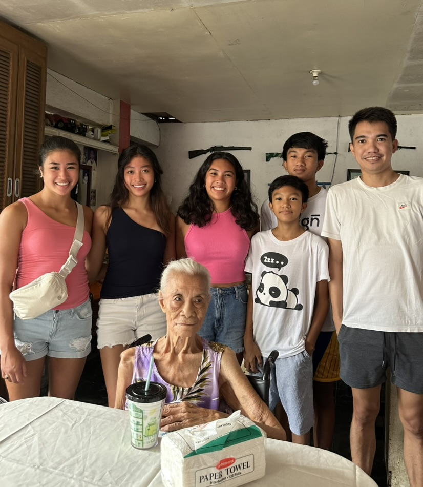
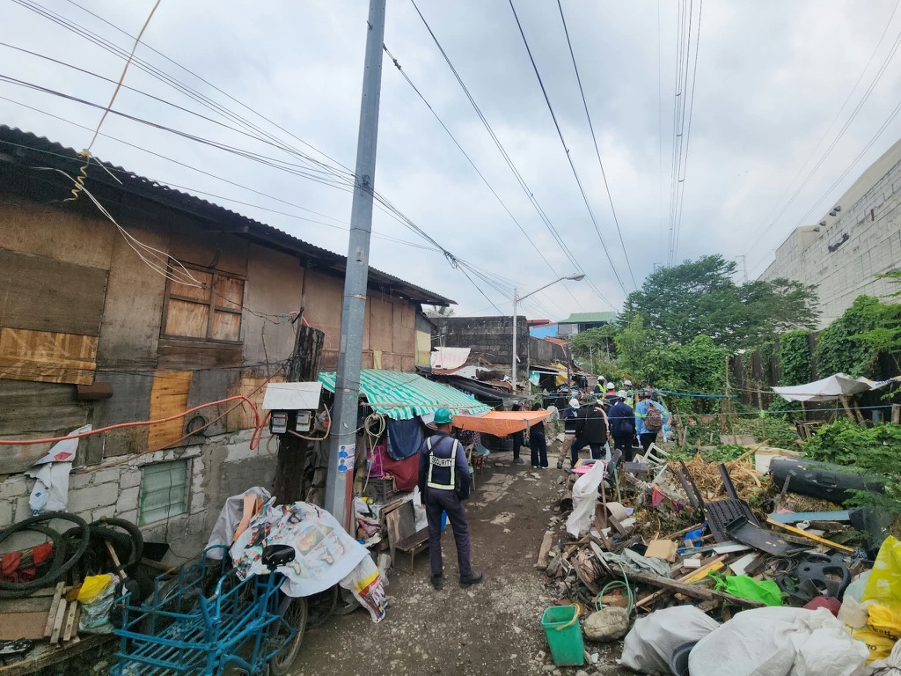

About Me
At just six years old, I understood the gap between my family in the United States and the relatives I had living in the Philippines. I helped my dad pack boxes of clothes, while he ensured the medications his parents needed were included, before we shipped everything to my grandparents in the Philippines. Because of this, even before I could truly understand the disparity, I knew my grandparents depended on our support to survive, relying on us to send them medicine they could not get on their own.
As I became older, I learned that my parents also sent a significant portion of our income to our family in the Philippines to cover basic necessities like food and housing. Consequently, when I finally visited, I was confronted by the disparities my family had been working to ease in person for the first time. Simply, what someone can afford and what resources are nearby dictate whether they can receive adequate medical care. As such, watching my parents make these sacrifices has made healthcare access personal to me. It is the catalyst that inspires me to become a physician who advocates for patients and communities facing these barriers.


Consequently, I immersed myself in advocacy in high school. I was selected to attend the 70th Commission on the Status of Women at United Nations Headquarters, where I engaged with Member States, UN entities, and accredited NGOs on issues affecting women and girls worldwide. As a result, I witnessed how policy decisions were shaped by people who did not experience their effects.
Furthermore, I orchestrated a statewide conference for students of Asian descent that served more than 500 students. I worked on sponsor outreach and campaign development, resultantly raising around $20,000, which funded youth education and enrichment in under-resourced Baltimore communities. Through this process, I learned the importance of creating environments where people have the opportunity to share their experiences and see themselves represented. As such, I want to be a physician who creates that same environment for patients, taking the time to learn where they come from so they feel comfortable explaining what they need.
Thus, these experiences have demonstrated that improving healthcare access requires understanding both the people affected and the systems that serve them. For this reason, I plan to apply to the Gillings School of Global Public Health to major in Community and Global Public Health, giving me the opportunity to study how factors like cost and location shape a community's health and how those barriers can be addressed on a larger scale.
Additionally, I intend to do research on health disparities in communities with limited access to care. Through this research, I will learn how to collect and analyze data on how factors like income and location affect people's health. In turn, I want to use empirical evidence to help design treatments and interventions that make care easier to reach for the communities that need it most.
Furthermore, in the summer of 2027, I will work as a medical assistant at SCS Physicians in Timonium, Maryland, where I will scribe for providers and explain results and treatment plans to patients. Through working as an MA, I will engage directly with patients and practice listening without assumptions or bias, a skill I will bring to my future patients. Accordingly, understanding a patient’s culture and beliefs will allow me to build trust with my patients and create treatment plans that fit their lives.
Ultimately, my goal is to become a physician who serves underserved communities, treating patients while also working to fix the reasons they struggled to get care in the first place. With this foundation, I hope to help develop programs and treatments that make care more affordable and easier to reach for communities that have gone without it.